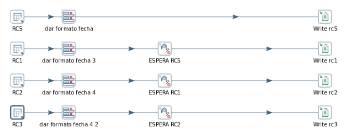

REPORTE RNC¶
1.OBJETIVO¶
-Tener un reporte semanal con el tráfico por RNC por hora de manera automatica ALCANCE
-Áreas involucradas: Gerencia de calidad y performance
DEFINICIONES
- OSSRC: Un regional cluster es el controlador de NETAC
- Un RNC es el controlador de las celdas UMTS
2.DESCRIPCIÓN GENERAL¶
Se muestra el tráfico por RNC hora por hora diferenciados por OSSRC El informe está dirigido al equipo de calidad y performance a fin de optimizar los tiempos de análisis del comportamiento de la red.
En el reporte figuran cuatro gráficos detallando el tráfico de cada RNC separado por OSSRC
3.ORIGEN DE DATOS¶
Reporte OSSRC 5 DD.MM.YYYY
Tablas:
OBJECTS_SP_UMTS_NE UMTS_NSN_SERVICE_NE_HOUR
Base de datos: Willy en perdido.claro.amx
Reporte OSSRC 6 DD.MM.YYYY
Tablas:
OBJECTS_SP_UMTS_NE UMTS_NSN_SERVICE_NE_HOURBase de datos: Willy en perdido.claro.amx
Reporte OSSRC 7 DD.MM.YYYY
Tablas:
OBJECTS_SP_UMTS_NE UMTS_NSN_SERVICE_NE_HOURBase de datos: Willy en perdido.claro.amx
Reporte OSSRC 8 DD.MM.YYYY
Tablas:
OBJECTS_SP_UMTS_NE UMTS_NSN_SERVICE_NE_HOURBase de datos: Willy en perdido.claro.amx
CONSULTAS SQL¶
Reporte OSSRC 5 DD.MM.YYYY
Reporte OSSRC 6 DD.MM.YYYY
Reporte OSSRC 7 DD.MM.YYYY
Reporte OSSRC 8 DD.MM.YYYY
4.PROCESO PENTAHO¶
Reporte RNC DD:MM:YYYY
Variable HOME: REPORTERNC-HOME Parámetros de entrada:
- FECHA (DD.MM.YYYY): Fecha tomada por la consulta SQL para filtrar los datos a un rango de tiempo. FECHA se Trunca dentro de la consulta al día Domingo
- FECHA_REPORTE (DD-MM-YYYY): fecha se usa para título del

Principal¶
Se divide en cuatro secciones similares en cuanto a la estructura cada uno específico para cada OSSRC
- En caso de existir un error en alguna de las transformaciones se guarda en el log una marca de error y luego se envía por email
Envió de Informe
En este proceso se realiza el envío del informe en Excel adjunto, se implementó un control por si falla el envío del email esperando 10 minutos y volviéndolo a intentar
Captura de errores
En esta sección se captura cualquier error que haya ocurrido en los JOB y transformaciones principales y se informa por email adjuntado el log
5.PRESENTACION¶
Se envía por Email
El “Reporte Reporte RNC Week YYYY” se envía los domingos a las 7 am por email.
Adjunto: